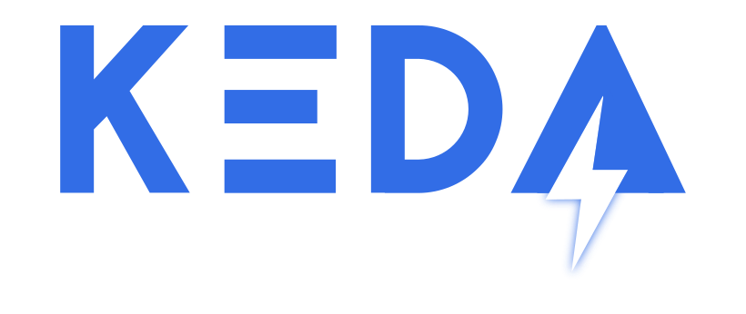

10. Oktober 2022
Jobs mit langer Laufzeit mit KEDA auslagern

Bei jedem Entwickler kommt früher oder später der Punkt, dass die Applikation ein paar Aufgaben erledigen muss, die den Server komplett auslasten. Recht schnell kommt man dabei auf die Idee, dass diese Aufgaben auf verschiedene Taskrunner ausgelagert werden können. Die naheliegendste Lösung (wenn man in der Cloud arbeitet) ist, dass man eine Azure Function / AWS Lambda / Google cloud function erstellt. Mit dieser Lösung ist auch nichts falsch, allerdings bevorzuge ich ein Provider-unabhängige Lösung.
Vorbereitung
Okay, also unsere Mission ist, dass wir eine Aufgabe, die unseren Server sehr lange auslastet in eine Art "Task Runner" auslagern, den wir anschließend mit Kubernetes ausführen möchten.
Die Vorgehensweise hierbei:
- Den Code, der lange Zeit benötigt aus der Hauptapplikation heraustrennen
- Einen Docker container erstellen, der den Code genau einmal ausführt und danach stirbt
- Sicherstellen, dass wir alle notwendigen Informationen (Zugangsdaten für die Datenbank, Konfiguration etc.) per Umgebungsvariable bereitstellen
Und schlussendlich: Testen, ob der Task-Runner das tut, was er soll. Wenn das der Fall ist, haben wir einen guten ersten Schritt im Thema "verteilte Berechnung" nach vorne gemacht. Aber jetzt haben wir die Herausforderung, diesen Job auch automatisch zu starten und zu skalieren. Nehmen wir an, dass wir unseren Task-Runner eine Aufgabe übernmehmen lassen wollen, die für einen bestimmten User angedacht ist. Wie können wir den Task starten und dabei die Kubernetes Infrastruktur benutzen? Eine einfache Möglichkeit wäre, einen einfachen Kubernetes "Job" zu starten. Aber wie und wann genau und wie oft?
Was ist KEDA?
KEDA ist eine Akronym für "Kubernetes Event-driven Autoscaling". Die Originalidee ist es, dass KEDA Skalierungsmechanismen bereitstellt, die mit den original Kubernetes Metriken nicht möglich sind. Während ich diesen Artikel schreibe, stellt KEDA bereits 56 verschiedene Skalierungsmechanismen bereit. Damit kann man viele verschiedene Quellen zum Skalieren verwenden - vom einfachen SQL-Query bis hin zu Prometheus monitoring Daten. Außerdem kann man mit KEDA verschiedene Dinge Skalieren - von Deployments, StatefulSets über CustomResources und... "Job". Bingo! Das wird uns im weiteren Verlauf nützlich sein.
Ein einfaches Beispiel mit redis
Die meisten von euch werden wissen, was redis ist. Für alle anderen: Redis ist ein in-memory Store mit vielen verschiedenen Optionen der Nutzung. Das fängt beim Caching an, man kann es aber auch als Message Broker verwenden. Manche hartgesottenen benutzen Redis gar als komplette Datenbank. In unserem Fall, möchten wir eine einfache FIFO-Queue (First in, First out-Warteschlange) nutzen, in der wir ein paar Jobs für unsere User einreihen. Um es einfach zu halten, werfe ich ein paar JSON-Objekte in die Warteschlange, sodass wir den User danach identifizieren können:
RPUSH usertask "{\"user\": 1}"
Dieser Befehl wir das Objekt {"user": 1} auf der rechten Seite (RPUSH) in eine Liste hinzufügen, die wir usertask genannt haben. Lasst uns gleich noch ein paar mehr pushen, damit wir die Skalierbarkeit testen können:
RPUSH usertask "{\"user\": 2}"
RPUSH usertask "{\"user\": 3}"
RPUSH usertask "{\"user\": 4}"
RPUSH usertask "{\"user\": 5}"
RPUSH usertask "{\"user\": 6}"
Aufgaben mit unserem Taskrunner abholen und bearbeiten
Jetzt wo wir ein paar Aufgaben in unserer Warteschlange haben, wollen wir diese natürlich auch ausführen. Um ein Beispiel zu geben, möchte ich ein bisschen node.js code teilen. Natürlich funktioniert das auch mit jeder anderen Sprache:
import { createClient } from 'redis';
const authentication = process.env.REDIS_USER && process.env.REDIS_USER.trim() != '' ? `${process.env.REDIS_USER}:${process.env.REDIS_PASSWORD}@` : ``;
const client = createClient({
url: `redis://${authentication}${process.env.REDIS_HOST}:${process.env.REDIS_PORT || 6379}/0`,
});
client.on('error', (err) => console.log('Redis Client Error', err));
console.log('Trying to get a single job...');
await client.connect();
const amount = await client.LLEN(process.env.REDIS_LIST);
if (amount == 0) {
console.log('...nothing to do!');
process.exit(0);
}
const job = await client.LPOP(process.env.REDIS_LIST);
console.log(`Executing job with parameters: ${job}`);
/**
* Some execution code
*/
console.log(`Completed`);
process.exit(0);
Dieser Code macht nichts anderes, als zu starten, sich zu redis zu verbinden und den ersten Job von links (du errinnerst dich - wir pushen neue Tasks von rechts, also bekommen wir den ältesten von links) mit LPOP abzuholen und etwas damit zu tun. Der Eingang und Ausgang von Aufgaben ist damit gelöst, aber wie starten wir diese jetzt?
KEDA Jobscaling
Jetzt kommt endlich KEDA ins Spiel. KEDA selbst führ eine neue Ressource, den sogenannten "ScaledJob" ein. Wenn man eine Ressource dieser Art hinzufügt, wird ein Job für jede Aufgabe in unserer redis Warteschlange gestartet, und zwar bis zu dem Punkt, den wir im "ScaledJob" definieren:
apiVersion: keda.sh/v1alpha1
kind: ScaledJob
metadata:
name: redis-runner-job
spec:
jobTargetRef:
parallelism: 1 # [max number of desired pods](https://kubernetes.io/docs/concepts/workloads/controllers/jobs-run-to-completion/#controlling-parallelism)
completions: 1 # [desired number of successfully finished pods](https://kubernetes.io/docs/concepts/workloads/controllers/jobs-run-to-completion/#controlling-parallelism)
activeDeadlineSeconds: 600 # Specifies the duration in seconds relative to the startTime that the job may be active before the system tries to terminate it; value must be positive integer
backoffLimit: 5 # Specifies the number of retries before marking this job failed. Defaults to 6
template:
spec:
restartPolicy: Never
containers: # The image, that we want to execute here
- name: redis-runner-dummy
image: marcelcremer/redis-runner-dummy:latest
imagePullPolicy: Always
envFrom:
- secretRef: { name: redis-runner }
pollingInterval: 30 # Optional. Default: 30 seconds
successfulJobsHistoryLimit: 5 # Optional. Default: 100. How many completed jobs should be kept.
failedJobsHistoryLimit: 5 # Optional. Default: 100. How many failed jobs should be kept.
# envSourceContainerName: {container-name} # Optional. Default: .spec.JobTargetRef.template.spec.containers[0]
maxReplicaCount: 25 # Optional. Default: 100
scalingStrategy:
strategy: "custom" # Optional. Default: default. Which Scaling Strategy to use.
customScalingQueueLengthDeduction: 1 # Optional. A parameter to optimize custom ScalingStrategy.
customScalingRunningJobPercentage: "0.5" # Optional. A parameter to optimize custom ScalingStrategy.
triggers:
- type: redis
metadata:
listName: {{ required "Please specify redis.list" .Values.redis.list | quote }} # The list that we observe, in our case "usertask"
listLength: "1" # How many items need to exist, before KEDA starts to scale?
enableTLS: "false" # optional
databaseIndex: "0" # optional
hostFromEnv: REDIS_HOST
portFromEnv: REDIS_PORT
passwordFromEnv: REDIS_PASSWORD
Dieses kleine Stück code macht ein paar außergewöhnlich coole Dinge:
- wir definieren, wie viele Jobs (pods) parallel gestartet werden dürfen, wie oft die fehlschlagen können bevor wir aufgeben etc.
- wir definieren, welches image unser eigentlicher "Job runner" ist und wie viele Instanzen wir maximal spawnen möchten (25 Replicas)
- wir definieren einen Trigger (in unserem Fall die redis Warteschlange), den wir beobachten um zu erkennen, ob neue Pods gestartet werden sollen oder nicht.
Und das ist es auch schon gewesen. Deploye das Ganze einfach (z.B. via Helm chart) in deine Umgebung und sieh dir an, wie Magie funktioniert. 🧙
Als ich es das erste Mal ausprobiert habe konnte ich gar nicht glauben, wie einfach das ist und bisher habe ich noch keine Sekunde mit KEDA bereut. Ich hoffe, du bekommst durch meinen Artikel und die Arbeit mit KEDA auch ein paar gute Ideen, was man damit noch anstellen kann.